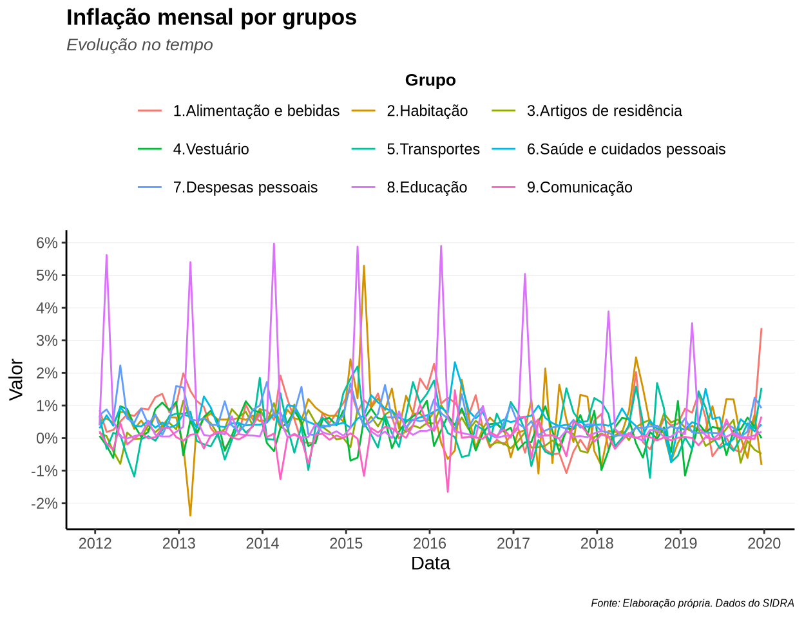

O dplyr é um pacote de manipulação de dados e sua documentação pode ser encontrada em seu site oficial. Para instalá-lo, bastar rodar o comando (não acrescentar no documento .Rmd, mas rodar no console):
install.packages("dplyr")
E para utilizá-lo, basta rodar o comando (no caso de arquivos .Rmd, acrescentar no início do documento):
O objetivo do pacote é ajudar na limpeza dos dados. Ou seja, suas funções ajudam a transformar uma tabela (usualmente um data.frame) “crua” em uma tabela pronta para a análise ou para a visualização.
O pacote possui dezenas de funções, que podem ser agrupadas conforme o elemento da tabela ao qual elas se aplicam (colunas, linhas, grupos de linhas). As mais utilizadas são:
select(): seleciona as colunas desejadas.mutate(): cria novas colunas ou altera valores de alguma ja existente.filter(): seleciona linhas com base em algum critério de uma variável (coluna).slice(): seleciona linhas com base em suas posições (ex. as 5 primeiras ou últimas).summarise(): resume um conjunto de linhas em uma única (ex. média)Para entender melhor a funcionalidade de cada uma, vamos ver como aplicá-las na prática.
Todos os exemplos a seguir se baseiam em uma tabela com valores da inflação para cada grupo de produtos. Os dados são do Sistema IBGE de Recuperação Automática (SIDRA).
Para baixar os dados, vamos utilizar a função get_sidra() do pacote sidrar. Esse pacote permite baixar tabelas da base de dados do SIDRA. Para maiores informações, recorrer à sua documentação.
Assim como foi feito para o pacote dply, mostrado acima, precisamos instalar e rodar esse pacote:
install.packages("sidrar")
Feito isso, para baixar a tabela desejada, utilizamos a função get_sidra(). O valor do parâmetro utilizado (api) é obtido no site do SIDRA. A documentação do pacote, apontada acima, explica passo a passo como fazê-lo.
ipca <- get_sidra(api = '/t/1419/n1/all/v/63,66/p/all/c315/7170,7445,7486,7558,7625,7660,7712,7766,7786/d/v63%202,v66%204')
A função get_sidra() nos entrega uma tabela no formato data.frame. Para se certificar disso, basta utilizar a função class():
class(ipca)
[1] "data.frame"Para fins de comparação, vejamos as classes de outros objetos:
Para visualizar essa tabela, vamos utilizar a função paged_table() do pacote rmarkdown.
paged_table(ipca)
Como é possível observar, a tabela apresenta muitas colunas (variáveis) e linhas (instâncias), o que torna mais difícil a análise dos dados.
A partir disso, nas próximas sessões vamos tratar esses dados com a ajuda do pacote dplyr, com o objetivo de obter uma tabela mais enxuta.
Antes, porém, vamos brevemente introduzir o operador %>%.
O pipe, %>%, é um operador que facilita a leitura do código, ao permitir o encadeamento de funções (que antes estariam uma dentro da outra). Ele é introduzido pelo pacote magrittr, mas já é incluso no dplyr, portanto não é necessário instalá-lo e carregá-lo manualmente. Para maiores informações sobre o pacote, olhar a documentação.
Vejamos como ele facilita a escrita e a leitura do código. Caso quiséssemos construir a tabela acima com apenas as 10 primeiras observações (utilizando a função head()), e descobrir a classe desse objeto, iríamos escrever:
class(paged_table(head(x = ipca, n = 10)))
[1] "paged_df" "data.frame"A leitura do código já começa a ficar difícil com apenas 3 funções (frequentemente utilizaremos um número maior de funções). Esse código poderia ser assim escrito com a utilização do pipe:
ipca %>%
head(n = 10) %>%
paged_table() %>%
class()
[1] "paged_df" "data.frame"Note como fica mais fácil de se identificar cada passo. O pipe fornece o objeto anterior como sendo o primeiro argumento da próxima função que será chamada. Assim, começamos como o objeto ipca, que é utilizado como o primeiro argumento da função head() (observe que não chamamos o argumento x, como no exemplo anterior), que por sua vez é utilizado como o primeiro argumento da função paged_table(), que por fim é utilizado como o primeiro argumento da função class().
É possível explicitar que cada objeto criado está sendo utilizado como o primeiro argumento da próxima função utilizando um ponto . para simbolizar esse objeto:
ipca %>%
head(x = ., n = 10) %>%
paged_table(x = .) %>%
class(x = .)
[1] "paged_df" "data.frame"A utilização do ponto . é mais útil quando o objeto anterior não é o primeiro argumento que a função chama. Por exemplo, podemos assim pedir os 5 primeiros números de um vetor com a sequência de 1 a 50:
5 %>%
head(x = 1:50, n = .)
[1] 1 2 3 4 5As duas funções principais que o pacote dplyr possui para manipular as colunas de um data.frame são select() e mutate(). Existem outras, como rename() e relocate(), porém não são tão essenciais como as duas primeiras.
A função select(), como o nome já indica, permite selecionar as colunas (variáveis) desejadas de um data.frame. Vamos utilizá-la para obter a coluna com os valores do ipca da tabela que construimos anteriormente.
Antes, vejamos todas as colunas que existem nessa tabela (com a função colnames():
ipca %>%
colnames()
[1] "Nível Territorial (Código)"
[2] "Nível Territorial"
[3] "Unidade de Medida (Código)"
[4] "Unidade de Medida"
[5] "Valor"
[6] "Brasil (Código)"
[7] "Brasil"
[8] "Variável (Código)"
[9] "Variável"
[10] "Mês (Código)"
[11] "Mês"
[12] "Geral, grupo, subgrupo, item e subitem (Código)"
[13] "Geral, grupo, subgrupo, item e subitem" Vamos selecionar as colunas “Valor”, “Variável”, “Mês” e “Geral, grupo, subgrupo, item e subitem”:
ipca %>%
select("Valor", "Variável", "Mês", "Geral, grupo, subgrupo, item e subitem") %>%
paged_table()
Outra forma de selecionar essa colunas é por meio de sua posição:
ipca %>%
select(5, 9, 11, 13) %>%
paged_table()
Se as colunas que desejamos estão uma seguida da outra, podemos utilizar dois ponto, :, para indicar de qual até qual coluna queremos. Por exemplo, vamos selecionar as colunas de 4 (“Unidade de Medida”) a 7 (“Brasil”):
ipca %>%
select(4:7) %>%
paged_table()
Podemos fazer o mesmo utilizando os nomes das colunas, ao invés de sua posição:
ipca %>%
select("Unidade de Medida":"Brasil") %>%
paged_table()
Podemos dar um novo nome a essas variáveis. A última coluna possui um nome muito grande, vamos chamá-la apenas de “Grupo” (note que o novo nome vem antes):
ipca %>%
select(5, 9, 11, "Grupo" = 13) %>%
paged_table()
Podemos também alterar a ordem das colunas. Vamos colocar a coluna “Grupo” primeiro, e a coluna “Variável” por último:
ipca %>%
select("Grupo" = 13, "Valor", "Mês", "Variável") %>%
paged_table()
Por fim, podemos indicar as colunas que não desejamos, ao invés daquelas que queremos, por meio do sinal negativo, -. Por exemplo, vamos excluir as colunas de 1 a 3, de 6 a 12 (podemos especificar cada uma ou utilizar os dois pontos e indicar a primeira e a última da sequência):
ipca %>%
select(-1, -2, -3, -(6:12)) %>%
paged_table()
A função mutate() permite criar novas colunas, utilizando ou não valores existentes das colunas originais.
Primeiramente, vamos partir de uma tabela com as colunas “Grupo”, “Unidade de Medida” e “Valor”:
ipca %>%
select("Grupo" = 13, "Unidade de Medida", "Valor") %>%
paged_table()
Como a tabela indica, a variável “Valor” está em porcentagem, porém, pode ser útil, para fins de algum cálculo, obter essa variável em formato numérico. Para tanto, podemos dividir cada instância da coluna “Valor” por 100.
ipca %>%
select("Grupo" = 13, "Unidade de Medida", "Valor") %>%
mutate("Valor" = `Valor`/100) %>%
paged_table()
As aspas no nome da coluna não são necessárias quando esse possui apenas uma palavra (não possui espaços). Já na expressão Valor/100, o nome da coluna é a variável que desejamos utilizar para o cálculo, portanto ela não deve conter aspas (caso essa incluísse um espaço no nome, utilizaríamos a crase no lugar das aspas). Assim, é de boa prática sempre utilizar as aspas quando estamos nos referindo a um nome e crase quando estamos nos referindo a uma variável.
Se quisermos, podemos criar uma nova coluna, ao invés de substituir a coluna “Valor” original. Para tanto, basta utilizar um novo nome para a coluna:
ipca %>%
select("Grupo" = 13, "Unidade de Medida", "Valor") %>%
mutate("Valor Numérico" = `Valor`/100) %>%
paged_table()
Agora, digamos que além do símbolo %, na coluna “Unidade de Medida”, desejamos incluir a palavra “porcentagem”. Para tanto, utilizamos os valores ja existentes nessa coluna e acrescentamos o que queremos.
ipca %>%
select("Grupo" = 13, "Unidade de Medida", "Valor") %>%
mutate("Unidade de Medida" = `Unidade de Medida` %>% paste0(" porcentagem")) %>%
paged_table()
Observe que o operador pipe, %>%, pode ser usado dentro dos argumentos de uma função. Aqui, utilizamos a função paste0() tendo o valor da variável “Unidades de Medida” como primeiro argumento e " porcentagem" como segundo argumento. Essa função, que permite concatenar objetos, já vem inclusa no pacote básico do R e não precisa ser carregada. Apenas para deixar o exemplo mais claro, vejamos como utilizar essa função:
paste0("Olá", "Mundo")
[1] "OláMundo"paste0("Olá"," ", "Mundo")
[1] "Olá Mundo"paste0(2 + 2, " = ", "quatro")
[1] "4 = quatro"Um caso recorrente do uso da função mutate() é a manipulação de datas. Como podemos observar na tabela, os valores para a coluna de datas fornecidos pelo SIDRA vem no formato de caractere, e não data. Para transformar esses valores em formato de data, podemos utilizar o pacote lubridate. Para maiores informações sobre o pacote, olhar a sua documentação.
install.packages("lubridate")
No formato original, a coluna “Mês” aparece assim (observe a descrição <chr> em baixo do nome da coluna):
ipca %>%
select("Mês", "Grupo" = 13, "Valor") %>%
paged_table()
Utilizando a função mdy() (referente à month, day, year):
ipca %>%
mutate("Data" = `Mês` %>% mdy()) %>%
select("Mês", "Data", "Grupo" = 13, "Valor") %>%
paged_table()
Observe que os valores foram transformados em formato de data, <date>.
As duas principais funções para manipular linhas de um data.frame são filter() e slice(). A primeira seleciona com base em algum critério de uma variável, e a segunda com base em posições.
A função filter() extrai linhas que atendem a algum critério lógico. Por exemplo, vamos criar uma tabela com as colunas “Grupo” e “Valor”, porém apenas para o grupo “2.Habitação”:
ipca %>%
select("Grupo" = 13, "Valor") %>%
filter(`Grupo` == "2.Habitação") %>%
paged_table()
Observe que estamos nos referindo à variável Grupo, não ao nome ao seu nome, portanto utilizamos crase ao invés de aspas. Observe também que utilizamos dois sinais de iguais, ==, ao invés de apenas um. Isso por que se trata de uma comparação lógica. No R (e em diversas outras linguagens de programação), um sinal de igual simboliza atribuição (o mesmo que <-) e dois sinais de igual simboliza a operação lógica de comparação.
Vamos agora filtrar apenas as linhas em que o valor da inflação de Habitação foi igual ou superior à média:
ipca %>%
select("Grupo" = 13, "Valor") %>%
filter(`Grupo` == "2.Habitação") %>%
filter(`Valor` >= `Valor` %>% mean()) %>%
paged_table()
Essa filtragem nos indica que há algo estranho na nossa tabela, uma vez que 14% é muito para uma média mensal de inflação para o período da tabela. Vamos relembrar as colunas da nossa tabela original:
ipca %>%
colnames()
[1] "Nível Territorial (Código)"
[2] "Nível Territorial"
[3] "Unidade de Medida (Código)"
[4] "Unidade de Medida"
[5] "Valor"
[6] "Brasil (Código)"
[7] "Brasil"
[8] "Variável (Código)"
[9] "Variável"
[10] "Mês (Código)"
[11] "Mês"
[12] "Geral, grupo, subgrupo, item e subitem (Código)"
[13] "Geral, grupo, subgrupo, item e subitem" Existe uma coluna que indica a variável à qual o valor faz referência. Para observarmos os seus possíveis valores, podemos utilizar a função distinct():
ipca %>%
select(`Variável`) %>%
distinct() %>%
paged_table()
Vamos filtrar apenas os valores referentes à variação mensal.
Uma forma mais rápida de filtrar por diversos critérios diferentes é colocar todos esses na mesma função, separados por uma vírgula. Porém, nesse caso, as condições são avaliadas simultaneamente, o que pode não ser o desejado. Por exemplo, antes de filtrar a variável apenas pela variação mensal, a média dessa coluna é próxima de 14%, o que faz com que nenhum valor seja selecionado com essa média:
ipca %>%
select("Grupo" = 13, "Variável", "Valor") %>%
filter(`Grupo` == "2.Habitação",
`Variável` == "IPCA - Variação mensal",
`Valor` >= `Valor` %>% mean()) %>%
paged_table()
Nesse caso, precisamos separar as funções:
ipca %>%
select("Grupo" = 13, "Variável", "Valor") %>%
filter(`Grupo` == "2.Habitação",
`Variável` == "IPCA - Variação mensal") %>%
filter(`Valor` >= `Valor` %>% mean()) %>%
paged_table()
Podemos também utilizar o operador lógico &, que indica que os dois critérios precisam ser atingidos simultaneamente (igual a utilização da vírgula) para a linha ser filtrada:
ipca %>%
select("Grupo" = 13, "Variável", "Valor") %>%
filter(`Grupo` == "2.Habitação" &
`Variável` == "IPCA - Variação mensal" &
`Valor` >= 1) %>%
paged_table()
Mas e se quiséssemos uma tabela composta por casos que se enquadrassem OU no grupo de Habitação OU no grupo Vestuário? Nesse caso, podemos utilizar o operador lógico |:
ipca %>%
select("Grupo" = 13, "Valor") %>%
filter(`Grupo` == "2.Habitação" | `Grupo` == "4.Vestuário") %>%
paged_table()
A função slice() extrai linhas com base na sua localização. Ela é muito útil quando estamos lidando com dados exportados do Excel, por exemplo, em que a planilha possui diversas linhas com textos que não interessam para a análise dos dados.
O argumento padrão que passamos para a função indica quais linhas queremos manter (o resto será descartado).
Por exemplo, vamos selecionar apenas a linha 50 ta tabela original:
ipca %>%
slice(50) %>%
paged_table()
Agora, vamos construir uma tabela com as colunas “Grupo” e “Valor” mas com apenas as 10 primeiras linhas (queremos as linhas de 1 a 10), semelhante ao que fizemos com a ajuda da função head():
ipca %>%
select("Grupo" = 13, "Valor") %>%
slice(1:10) %>%
paged_table()
Podemos também indicar quais linhas não queremos incluir, com o uso do sinal negativo, -. Ao invés de obter apenas as 10 primeiras linhas, vamos excluir essas e obter o resto:
ipca %>%
select("Grupo" = 13, "Valor") %>%
slice(-(1:10)) %>%
paged_table()
Quando não sabemos o número total de linhas (ou quando esse pode variar), pode ser útil utilizar a função auxiliar n() para indicar a última linha. Vamos construir uma tabela com as linhas a partir da centésima até a última:
ipca %>%
select("Grupo" = 13, "Valor") %>%
slice(100:n()) %>%
paged_table()
Além disso, a função slice() possui algumas variantes que facilitam algumas operações muito utilizadas, como a obter as primeiras (slice_head()) e a últimas (slice_tail()) linhas. Nesses casos, passamos apenas o número de linhas que desejamos:
ipca %>%
select("Grupo" = 13, "Valor") %>%
slice_head(n = 5) %>%
paged_table()
ipca %>%
select("Grupo" = 13, "Valor") %>%
slice_tail(n = 5) %>%
paged_table()
A função summarise(), como o nome indica, sumariza as observações de uma tabela. Para tanto, precisamos indicar como queremos esse resumo dos dados, ou seja, qual estatística queremos. Por exemplo, vamos encontrar a média de todos os valores da inflação (presente na coluna “Valor”):
ipca %>%
filter(`Variável` == "IPCA - Variação mensal") %>%
summarise(`Valor` %>% mean()) %>%
paged_table()
É possível criar novos nomes aqui, de forma semelhante ao que fizemos com a função mutate():
ipca %>%
filter(`Variável` == "IPCA - Variação mensal") %>%
summarise("Média" = `Valor` %>% mean()) %>%
paged_table()
Entretanto, obter apenas o valor geral para a tabela inteira usualmente não é tão útil. Podemos querer, por exemplo, uma tabela com a média de cada grupo da inflação. Para tanto, precisamos antes agrupar os dados, por meio da função group_by():
ipca %>%
filter(`Variável` == "IPCA - Variação mensal") %>%
group_by("Grupo" = `Geral, grupo, subgrupo, item e subitem`) %>%
summarise("Média" = `Valor` %>% mean()) %>%
paged_table()
Podemos incluir diversos cálculos nesse sumário. Por exemplo, ao invés de mostrar apenas a média, vamos mostrar também as inflações mínima e máxima de cada grupo e o número de observações (com ajuda da função auxiliar n()):
ipca %>%
filter(`Variável` == "IPCA - Variação mensal") %>%
group_by("Grupo" = `Geral, grupo, subgrupo, item e subitem`) %>%
summarise("Média" = `Valor` %>% mean(),
"Mínima" = `Valor` %>% min(),
"Máxima" = `Valor` %>% max(),
"Observações" = n()) %>%
paged_table()
Utilizando essas funções do pacote dplyr, vamos pegar a tabela original do SIDRA e vamos construir uma tabela que mostre apenas o mês e o nome e o valor numérico (ao invés de porcentagem) da inflação mensal para cada grupo. O código da tabela final estará escondido a priori, mas para vê-lo basta clicar em “Show code”. Tente reproduzir a tabela final antes de olhar o código.
Ponto de partida:
ipca %>%
paged_table()
Tabela final:
Para visualizar melhor esses dados, podemos construir um gráfico. O pacote ggplot2 é tema de outra seção, porém será utilizado aqui apenas para mostrar um pouco do que ele é capaz.
ipca %>%
filter(`Variável` == "IPCA - Variação mensal") %>%
select("Data" = `Mês`, "Grupo" = 13, "Valor") %>%
mutate("Data" = `Data` %>% mdy()) %>%
mutate("Valor" = `Valor` / 100) %>%
ggplot() +
aes(x = `Data`, y = `Valor`, color = `Grupo`) +
geom_line() +
labs(
title = "Inflação mensal por grupos",
subtitle = "Evolução no tempo",
caption = "Fonte: Elaboração própria. Dados do SIDRA"
) +
scale_y_continuous(breaks = seq(from = -0.03, to = 0.06, by = 0.01),
labels = scales::percent_format(accuracy = 1)) +
scale_x_date(date_breaks = "1 year", date_labels = "%Y") +
theme_classic() +
theme(
plot.title = element_text(face = "bold", size = 13, hjust = 0, colour = "black",),
plot.subtitle = element_text(face = "italic", size = 10, hjust = 0, colour = "grey30"),
plot.caption = element_text(face = "italic", size = 6, margin = margin(t = 15), hjust = 1),
legend.position = "top",
legend.title = element_text(face = "bold", size = 10, hjust = 0.5),
panel.grid.major.y = element_line(colour = gray(0.85), size = 0.1)
) +
guides(color = guide_legend(nrow = 3, byrow = TRUE, title.position = "top"))
